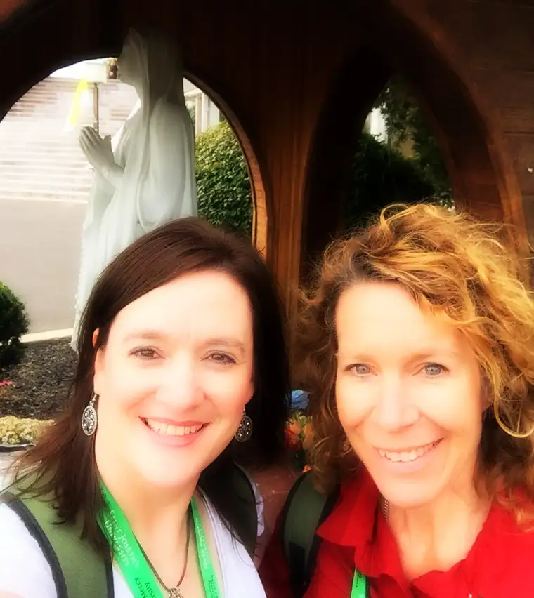

I’ve been thinking a lot lately about the transcendentals — especially the three that are credited with drawing people to the Church: goodness, truth and beauty.
These three have a magnetic force about them that seems to transcend the din. In our world of constant chatter and dog-eat-dog discussions about why we’re right and everyone else wrong, they rise above, and shine. In a way, they don’t need words. They just are, and what they accomplish comes straight from the heart of God. They draw us to Him, the lover of our lives, our purpose for being.
God wants to share his love with us. It is a love that spills over, begging for a lover to which it can connect. We are the subject of God’s desire; his love for us is unending, and woos us into eternal life.
I just felt it time to pull back from the loudness of the world to zero in on these simple realities that give life such meaning. So in the course of three posts, I’ll do so, beginning with GOODNESS.
God is good, and so it makes sense that goodness would draw us to God. And it’s not always in the ways we’re expecting.
This past summer, an example came before me boldly, though in the most unobtrusive manner, when someone from our school community passed away. I attended the funeral, and was struck by one of the readers, who happens to be a very good friend of mine. This friend had spent countless hours with the deceased, out of the goodness of her heart. She was not family, but had grown very close to her. And so, she was asked to read at her funeral Mass.
As Ann walked up to the ambo to read, I was struck with her goodness. She has been such a good friend, for one, but even if I had not been privileged to be among her friends, I would still see it. Before we crossed paths long enough to form a friendship, I noticed it. It caught my attention. She exuded goodness, and I was drawn.
To me, this just cuts to the heart of our faith. It is GOOD. And it results in good. And it draws good. And it manifests good.
And when you see it, there are no words. When you see it, it fills your interior with light and joy. I see it in the person of my friend Ann. There is a humility that comes with this goodness that is truly beautiful.
Speaking of goodness, there is perhaps no other model of it most fitting than Mary, mother of God, vessel of our Savior Jesus Christ. Here, Ann and I pay tribute to this gentle and good woman at a shrine in Philadelphia, one year ago, while in the city for the World Meeting of Families.

Another source of goodness to me is my mother. I know that any goodness within me comes from having been raised by such a good person; I mean, truly and genuinely good. What a gift. It started many years ago, when she comforted me and pulled me close, and she still does this. And it is good, and I know I am blessed immeasurably through her good and loving touch.
In both of these examples, I know there is a source beyond this goodness that points to a God who is VERY GOOD, so when I see this goodness emanating from these special people in my life, I cannot help but be inclined to peek behind them to find the source. We are born good, yes, but on our own, we cannot bring the goodness that is in us to completion. It is because of God, through God, that we allow this goodness to shine, that we cultivate it, that we return to it.
When all of the ugly is happening all around, goodness enters in, and shatters the darkness. And we are the beneficiaries. Praise God.
Speaking of good, I have made it to my 48th year of life as of today! God has been very good to me, and for that, I am deeply grateful.
“God saw all that he had made, and it was very good.” (Genesis 1:31)
Q4U: What is the good in your life that draws you back to God?